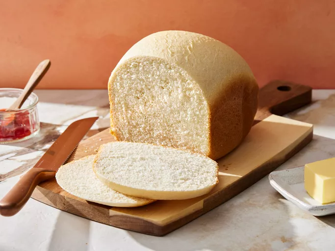

Home
Bread Recipe

Description
Bread is a staple food made from flour and water, usually by baking. It is one of the oldest prepared foods, with evidence of bread-making dating back to prehistoric times. Bread can be made in various forms, including loaves, rolls, and flatbreads. The basic ingredients include flour, water, yeast, and salt. Bread can be leavened (using yeast or baking powder) or unleavened (like flatbreads). It is often enjoyed fresh, toasted, or as part of a meal. Bread is versatile and can be flavored with herbs, spices, or other ingredients. It is a key component in many cuisines worldwide, serving as a base for sandwiches, a side for soups and salads, or simply enjoyed on its own.
Ingredients
- Flour
- Water
- Yeast
- Salt
- Optional: Sugar, butter, or milk for flavor and texture
Steps
- Mix the Ingredients: In a large bowl, combine flour, water, yeast, and salt. If desired, add sugar for sweetness and butter or milk for richness. Stir until a soft dough forms.
- Knead the Dough: Transfer the dough to a floured surface and knead for about 10 minutes until it becomes smooth and elastic. This develops the gluten, which gives bread its structure.
- First Rise: Place the kneaded dough in a lightly greased bowl, cover it with a damp cloth or plastic wrap, and let it rise in a warm place for about 1 to 2 hours, or until it has doubled in size.
- Punch Down and Shape: Gently punch down the risen dough to release air. Shape it into a loaf and place it into a greased loaf pan.
- Second Rise: Cover the shaped dough again and let it rise for another 30 to 60 minutes, or until it has risen above the rim of the pan.
- Preheat the Oven: Preheat your oven to 375°F (190°C).
- Bake the Bread: Bake the bread in the preheated oven for about 25 to 30 minutes, or until the top is golden brown and the bread sounds hollow when tapped on the bottom.
- Cool and Serve: Remove the bread from the oven and let it cool in the pan for a few minutes. Then transfer it to a wire rack to cool completely. Slice and enjoy your homemade bread!
Enjoy your delicious homemade bread!